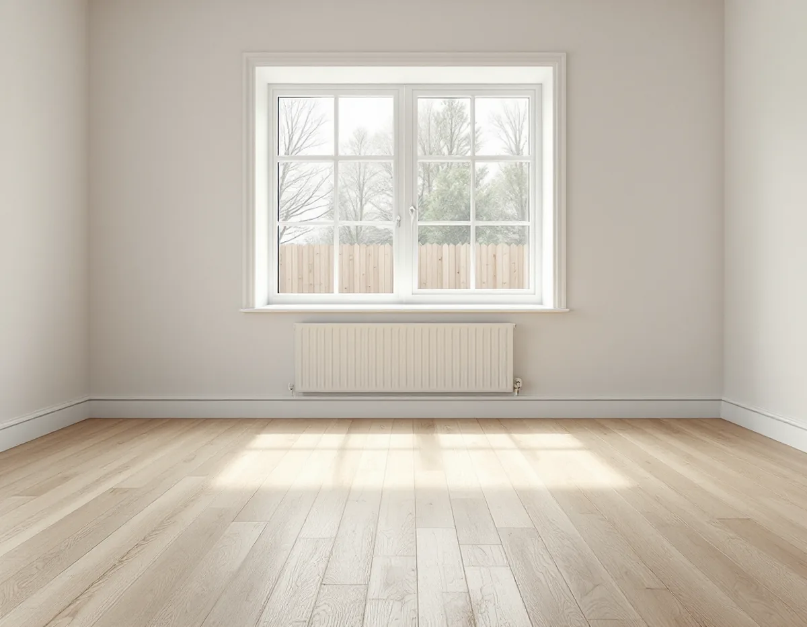
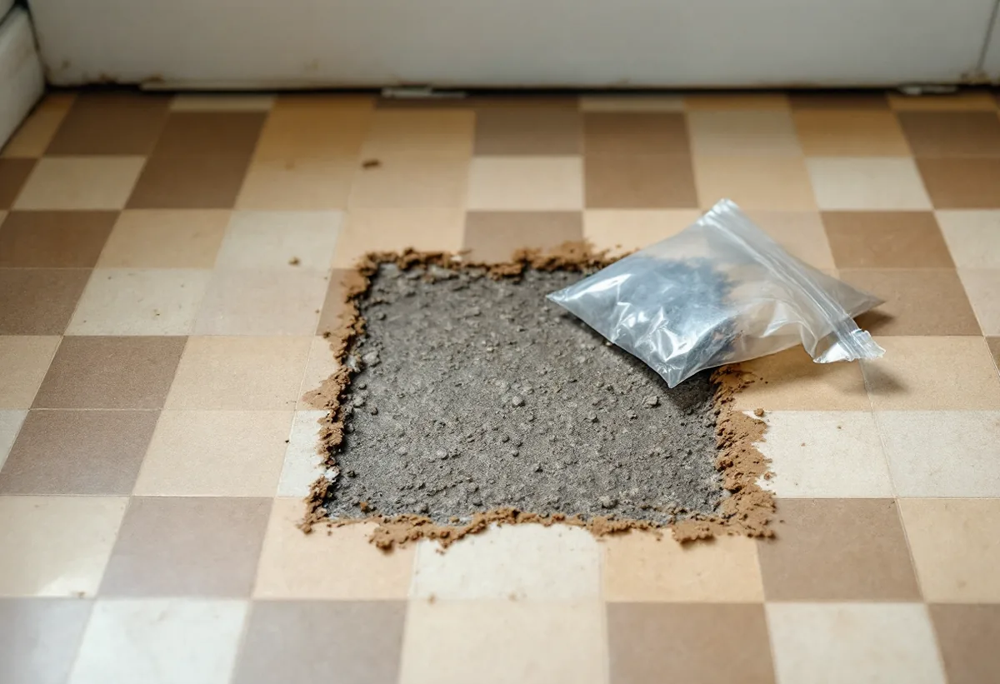

Platsbesök
Vi tittar på golvet, lyfter en list och frågar om husets byggår och tidigare renoveringar.
Under en plastmatta från 1960-talet kan det ligga både ett fint trägolv och ett lim som inte bör slipas upp i onödan. I Järfälla finns hus från egnahemsåren, tidiga kedjehus och allt som byggts sedan dess. Geal Entreprenad AB lägger nya golv, slipar och lagar trägolv i hela kommunen – från Jakobsberg och Viksjö till Kallhäll och Barkarby – med gratis platsbesök och skriftligt kostnadsförslag.

Enligt SCB fanns det 11 492 bostäder i småhus i Järfälla 2024. Ett område som kommunens kulturmiljöplan lyfter fram är Skogsvägen–Toppvägen i Jakobsberg. Det exploaterades i början av 1960-talet, och husen uppfördes av flera olika byggfirmor, vilket gav en varierad utformning. Längs Vretstigen och norra delen av Toppvägen står tvåvåningsradhus, medan södra Toppvägen, Skogsvägen och början av Bergsringen har kedjehus.
Planen beskriver bebyggelsen som en god bild av det tidiga 1960-talets småhusbyggande. För den som ska byta golv betyder det att grannens lösning inte säkert passar ditt hus. Två hus på samma gata kan ha olika bjälklag, olika underlag och olika många lager golv. Därför lyfter vi en list eller tittar under en tröskel innan vi föreslår något.

Boverket skriver att asbest förbjöds inom byggsektorn 1982, men att stora mängder fortfarande finns kvar i husen. Är ett hus byggt mellan 1940 och 1980 är det enligt Boverket sannolikt att det finns asbest någonstans i det. Bland exemplen på var den kan sitta finns golvplattor, mattor, lim under mattor och plattor, skikt under mattor och golvmassor.
Så länge asbesten ligger kvar i bunden form är den ingen fara, men den blir det om materialet slipas, bryts eller dammar. Boverket påpekar att provtagning och analys är det enda säkra sättet att veta. Därför river vi inte upp en gammal matta eller platta förrän vi vet vad som ligger under. Finns det misstanke tas ett prov som skickas till ett laboratorium, och visar det asbest behöver saneringen planeras av ett företag med rätt kompetens innan golvarbetet börjar. Ibland går det att låta det gamla skiktet ligga orört och bygga det nya golvet ovanpå, vilket vi i så fall går igenom med dig.
Kulturmiljöplanen berättar att Jakobsbergs gård såldes 1918 till Mälarprovinsernas Egnahem AB. Företaget styckade ägorna till småbruk och trädgårdsmästerimark, och även villatomter styckades av. På de forna ägorna började samhället Jakobsberg växa upp.
I de äldre husen ligger ofta massiva trägolv. Golvbranschen beskriver dem som golv som kan renoveras många gånger, där det som sätter gränsen är hur tjockt träet är mellan ytan och not och spår. Vi mäter det innan vi slipar. Branschen påpekar också att trä krymper och sväller med luftens fuktighet och mår bäst vid 30–60 procent relativ fuktighet, och att våta rengöringsmetoder bör undvikas. Mer om ytbehandling och golvtyper finns på sidan om golvläggning.
Ett vanligt golvbyte kräver ingen kontakt med kommunen. Annorlunda blir det om bjälkar ska kapas för en ny trappa, ett avlopp eller en golvvärmeslinga. Järfälla kommun skriver att ändringar som påverkar en byggnads bärande konstruktion kräver anmälan och att du ska invänta startbesked innan arbetet börjar.
Kommunen tipsar om att gamla ritningar visar husets principiella konstruktion, men varnar för att de kan vara ofullständiga och att det inte är säkert att husen byggdes som ritningarna visar. Kommunen kan inte själv bedöma om en åtgärd påverkar bärande delar, utan hänvisar till en konstruktör. Vi säger till redan vid platsbesöket om vi ser att golvet kan beröra stommen.
Enligt kommunen består Järfälla huvudsakligen av normal- och lågriskmark för radon, men med små lokala variationer som gör det olämpligt att generalisera per område. Kommunen rekommenderar en ny mätning om det har gått mer än tio år sedan den förra, om husets ventilation har ändrats eller om man har gjort förändringar i husgrunden, till exempel rörgenomdragningar.
Ska golvet på en platta öppnas för nya rör, till exempel i samband med att badrummet i Järfälla görs om, är det klokt att planera en långtidsmätning efteråt. Den görs under flera månader mellan 1 oktober och 30 april.
Vi tittar på golvet, lyfter en list och frågar om husets byggår och tidigare renoveringar.
Finns gamla plattor eller lim som kan innehålla asbest tas ett prov innan något rivs.
Du får ett skriftligt kostnadsförslag där rivning, underlag och nytt golv redovisas för sig.
Möbler flyttas, trappor och dörrar skyddas och underlaget rensas och riktas.
Det nya golvet läggs, eller det gamla trägolvet slipas och lagas.
Lister och trösklar sätts tillbaka och du får råd om skötsel av det nya golvet.
Skatteverket godkänner rotavdrag för att slipa och byta golv i ett småhus du äger och bor i, och räknar även byte från plastmatta till trägolv som rotarbete. Avdraget är 30 procent av arbetskostnaden, högst 50 000 kr per person och år, och rot och rut får tillsammans vara högst 75 000 kr.
Material och resor ingår inte i avdraget. Geal gör avdraget direkt på fakturan.
Golvytan, hur många gamla lager som ska bort och om underlaget behöver riktas avgör mest. Behövs asbestprov eller sanering kommer det till som en egen post. Platsbesöket är gratis och du får ett skriftligt kostnadsförslag.
Parkett, trägolv, klinker och slipning.
Golvläggning i Stockholm →Takbyte, takbesiktning och plåtarbeten.
Takläggare i Järfälla →Jakobsberg, Viksjö och Kallhäll.
Takrenovering i Järfälla →Planbesked, extra bostad och ansvar.
Byggföretag i Järfälla →Bruksvillor, radhus och 70-talsfönster i Järfälla.
Fönsterbyte i Järfälla →Radhus, kedjehus och souterränghus.
Badrumsrenovering i Järfälla →Kedjehus, radhus och souterräng.
Köksrenovering i Järfälla →Putsade radhus, kedjehus och villor i Järfälla.
Målare i Järfälla →Förgårdar, förråd och ytterdörrar.
Snickare i Järfälla →